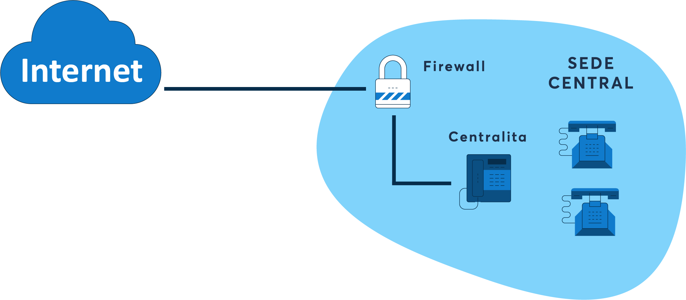

Seguridad en la comunicación de datos
Redes Perimetrales
Se pueden comparar con las redes perimetrales de las canchas de fútbol, las cuales brindan seguridad tanto para el jugador como para el espectador en el sentido que la pelota de fútbol no salga volando de la cancha, y que todo se quede dentro de la cancha.
Asimismo, en las redes informáticas, las redes perimetrales (también conocidas como DMZ) es una red de seguridad que se encuentra entre la red interna de una organización e Internet, y protegen los datos de forma que nadie externo a la red y sin autorización pueda acceder a éstos, y así, permiten la conectividad segura entre las redes de la nube y las redes de los centros de datos locales o físicos. También permiten la conectividad segura hacia Internet y desde este.
Gracias a las redes perimetrales se tiene un mejor control sobre el tráfico entrante y saliente, teniendo consigo grandes ventajas:
- Protege a la empresa u organización de ataques externos: Se establece una barrera entre la red interna y el exterior, lo que ayudará a evitar que los atacantes externos causen daños en la empresa.
- Detección de intrusiones: Al establecer una barrera entre la red interna y el exterior, las redes perimetrales ayudarán a detectar intrusiones, bloquear el tráfico sospechoso y tomar medidas contra éstas.
- Protección contra ataques DDoS: Los ataques DDos consisten en el ataque a sistemas, servidores o redes con tráfico para agotar los recursos y ancho de banda, teniendo como resultado la incapacidad de la víctima de procesar peticiones. Con la red perimetral, gracias a la barrera creada entre los recursos internos y el exterior, será posible de evitar y bloquear los ataques DDoS.
- Protección contra el robo de información: Naturalmente, al estar los datos de la red interna de la empresa protegidos gracias a la red perimetral informática, esto ayudará a evitar que los atacantes accedan y roben información de la red interna.
Por sobre todo, se tiene garantizada una mejora de la seguridad de la red, protegiendo los datos y la red interna de los ataques externos, ayudando también a controlar el tráfico entrante y saliente, pues el objetivo principal de los atacantes que intentan romper el área de seguridad perimetral es conseguir acceso a la información protegida, intentando hallar vulnerabilidades para aprovecharlas y entrar libremente a dicha información.
Seguido a esto, lamentablemente, en la actualidad el enfoque perimetral se está quedando obsoleto, siendo la razón principal que los datos ya no se alojan en una red interna, sino en la nube y entre varios proveedores de esta.
Eventualmente, las redes perimetrales cuentan con sus respectivas desventajas y vulnerabilidades, y es que su mayor fallo de seguridad es que si un atacante consigue acceder a la red interna que se supone está siendo protegida, también puede acceder a los datos y sistemas que haya dentro de esta. Por consiguiente, pueden penetrar en la red al robar las credenciales de usuario, aprovechar una vulnerabilidad de seguridad, introducir una infección de malware, o llevar a cabo un ataque de ingeniería social, entre otros métodos.
Si bien otras herramientas de seguridad y prevención de intrusiones como los firewalls pueden detener algunos de estos ataques, en el momento en que alguno de ellos consiga pasar, el coste es muy alto.